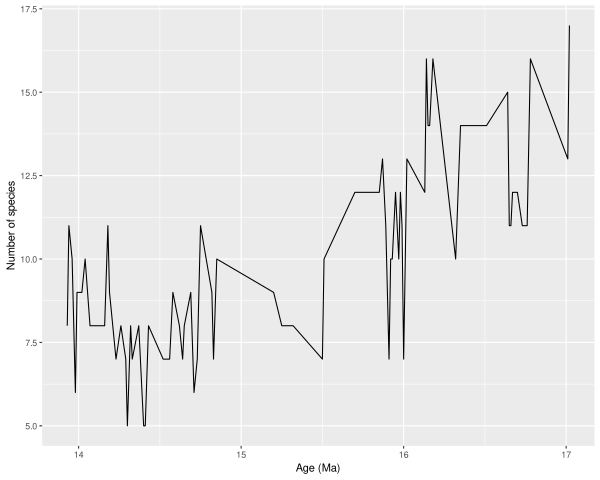
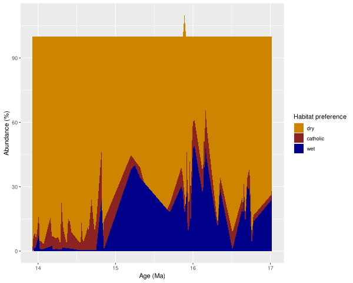
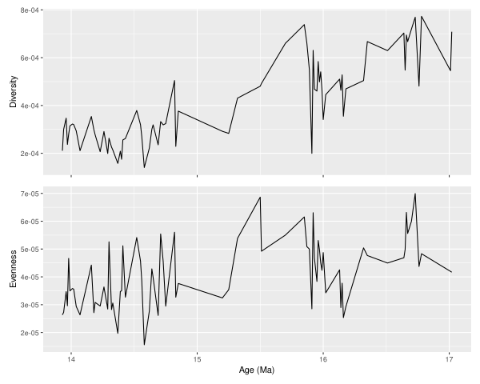
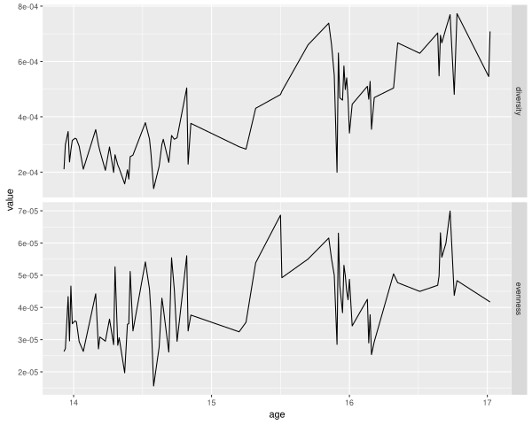

Making Paleontology—fauna excercise 8 in R
Table of Contents
1 Preparation
If you're curious about learning R, this exercise could be a fun little first challenge!
While excel works, it often introduces problems that shouldn't be there: in
this exercise it isn't able to plot the age in millions of years ago (Ma) as a
date, because it doesn't have enough digits for conversion. As a workaround you
can convert it to kyr in stead.
That is obviously stupid. And it's not the only frustrating excel thing you may run into. One of the nice things about using a scripting language—such as python or R—instead, is that your work becomes reproducible and you and others can use your tricks again in the future!
Here we show you how you could do this exercise in R. Please play around first and enjoy the struggle for a bit.
1.1 installation
Install R and RStudio. R is the programming language and RStudio is a friendly graphical interface (or technically Integrated Development Environment) for R.
If you don't know how, you can follow many online guides, such as this edX course. Note that for Mac users there are some additional installation steps required.
Install the required packages—extensions of R that make life even easier!—by opening RStudio and going to the bottom-left panel (the terminal) and typing, e.g.:
install.packages("ggplot2")
Or, if you want to use ggplot2, dplyr, purrr, etc., which I highly recommend,
install them all at once with:
install.packages("tidyverse")
since they are part of the tidyverse, a collection of packages that makes R amazing.
1.2 load the libraries
These commands make the package functions available for use in your session:
library(readr) # to read in the csv file (or use readxslx to read in excel files) library(ggplot2) # for plotting library(patchwork) # for composite plots library(dplyr) # for tidy data manipulation library(tidyr)
Attaching package: ‘dplyr’
The following objects are masked from ‘package:stats’:
filter, lag
The following objects are masked from ‘package:base’:
intersect, setdiff, setequal, union
1.3 getting started
As a start, I highly recommend reading through the freely available book R for
data science by Hadley Wickham. You can also try the datacamp Introduction to R
online course, which helped me get started initially. One last resource to get
you started is to install the package swirl and interactively learn the basics
right from R.
install.packges("swirl")
library(swirl)
swirl()
1.4 getting help
When you have problems or questions, have a look at any error messages if
present and consult the documentation of the function of interest with,
?function_name or search for a topic with ??topic.
e.g., enter:
?ggplot
in the terminal.
If When you have questions, search! This is not considered cheating!
StackOverflow, your search engine, and sometimes even twitter #Rlang are your
friends!
2 Practical 8
2.1 read the data
I prepared a slightly cleaner CSV sheet, which we can read into R more easily. You can download it here:
See the end of the document for a copy-pastable version.
I rename some columns here so that I can type less and we don't have spaces in the column names.
strat <- read_csv("biostrat_clean.csv", skip = 1) %>%
rename(c(bio = "LOCAL BIOZONE", age = "NUMERICAL AGE in MA", loc = "LOCCODE", n_m12 = "N M12", N = "N of SPECIES",
dry = "% DRY RODENTS", catholic = "% CATHOLIC", wet = "% WET RODENTS")) %>%
select(-LOCCODE_1)
Parsed with column specification: cols( .default = col_double(), `LOCAL BIOZONE` = col_character(), LOCCODE = col_character(), LOCCODE_1 = col_character() ) See spec(...) for full column specifications. Warning message: Duplicated column names deduplicated: 'LOCCODE' = 'LOCCODE_1' [64]
The output tells us how it read the csv file and what types each column was identified as.
You can also read in the raw excel file directly with the package readxl if you
want.
2.2 Graph of the species number per locality.
The first exercise is the easiest. We take our data strat and pipe it (%>%) to
the ggplot function. You can read this as: take strat and then do ggplot with
it.
Within the plot we specify so-called aesthetics with aes. This links columns of
the data to things we can plot, in this case x and y for a simple scatter plot.
Because we are dealing with a time series (albeit a discontinuos one) it is
customary to plot the series with a line, which we add with geom_line.
strat %>% ggplot(aes(x = age, y = N)) + geom_line() + labs(x = "Age (Ma)", y = "Number of species")

To learn more about creating plots with ggplot2, I highly recommend following
the online course data visualisation with ggplot2 and chapter 3 of r4ds: data
visualisation.
If you don't like the gray grid behind the data, have a look at ?theme. You can
easily change the plot to a black and white classical plot with a +
theme_classic() at the end.
2.3 Graph of habitat preference
2.3.1 tidy the data
For this plot we need to re-arrange the data a little bit. Right now all the
percentages of the rodents are in different column. For easy plotting and data
processing, usually we want so-called tidy data. This means that each row
corresponds to one observation.
In this case that would mean we'd repeat the age and location code three times,
with one new variable percentage and another with the habitat.
strat_hab <- strat %>% # remove all non-essential columns and rename for easy access select(age, loc, dry, catholic, wet) %>% # convert to long-format (this is something to look up and learn!) pivot_longer(cols = c(dry, catholic, wet), values_to = "percentage", names_to = "habitat")
To illustrate, we switch from:
| bio | age | loc | D.franconicus | D.koenigswaldi | D.larteti | Ligerimys ellipticus | Keramidomys | n_m12 | N | dry | catholic | wet |
|---|---|---|---|---|---|---|---|---|---|---|---|---|
| E | 13.93 | LUM19 | nil | nil | 4 | nil | nil | 189 | 8 | 97.9 | 2.1 | nil |
| nil | 13.94 | LP4B | nil | nil | 28.9 | nil | nil | 483 | 11 | 93.2 | 6 | 0.8 |
| nil | 13.96 | LP4A | nil | nil | 32.4 | nil | nil | 82 | 10 | 91.6 | 8.4 | nil |
| nil | 13.97 | LUM14 | nil | nil | 60.2 | nil | nil | 493 | 8 | 94.1 | 4.1 | 1.8 |
| nil | 13.98 | LUM18 | nil | nil | 49.1 | nil | nil | 132 | 6 | 93.2 | 6.8 | nil |
| nil | 13.99 | LUM17 | nil | nil | 25 | nil | nil | 108 | 9 | 90.2 | 4.9 | 4.9 |
to:
| age | loc | habitat | percentage |
|---|---|---|---|
| 13.93 | LUM19 | dry | 97.9 |
| 13.93 | LUM19 | catholic | 2.1 |
| 13.93 | LUM19 | wet | nil |
| 13.94 | LP4B | dry | 93.2 |
| 13.94 | LP4B | catholic | 6 |
| 13.94 | LP4B | wet | 0.8 |
read up on creating tidy data in r4ds chapter 12.
2.3.2 create the plot
With the tidy data, creating an area chart is very easy:
strat_hab %>%
ggplot(aes(x = age, y = percentage, fill = factor(habitat, levels = c("dry", "catholic", "wet")))) +
# this plots each line as a polygon
geom_area() +
scale_fill_manual(values = c("dry" = "orange3", "catholic" = "brown4", "wet" = "blue4")) +
labs(x = "Age (Ma)", y = "Abundance (%)", fill = "Habitat preference")

Here we adjust the colours manually. Note that generally it's not nice to use
manual colour scales because it's hard to estimate what colourblind people are
able to see well. In this case, with only 3 values and where specific colours
can make intuitive sense, I set it manually. I like to use
viridis::scale_fill_viridis often!
Oh, and what does :: mean you ask? It means: look in package viridis for the
function scale_fill_viridis.
2.3.3 what's up at 16 Ma?
Notice the weird outlier near 16 Ma, where the total is larger than 100%!
Let's figure out which sample it is.
strat_hab %>% group_by(age, loc) %>% summarize(total = sum(percentage)) %>% # filter those rows where the percentage is not 100 filter(total > 100 | total < 100)
| age | loc | total |
|---|---|---|
| 15.87 | COL-D | 99.8 |
| 15.89 | COL-C | 110 |
You will always have some noise in your data. With R, it's quite easy to drill down into where it is and what causes it. Unfortunately, it won't stop you from making mistakes in the first place 😉.
2.4 Graph of Diversity and Equity
2.4.1 compute diversity and equity
Read the handout about how we calculate diversity and equity.
- by column
We
mutate_athere to do calculations for many columns. However, this is an instance in which having this as tidy data would make some more complex examples easier!First we'll do the calculations in the way the dataframe is already set up.
strat_div <- strat %>% # first square all the species abundances mutate_at(vars(D.franconicus:Keramidomys), ~ . ^ 2) %>% # this overwrites the columns! use a named list if you want new columns in # stead. then calculate diversity and evennes mutate(diversity = 1 / (rowSums(select(., D.franconicus:Keramidomys), na.rm = TRUE)), evenness = diversity / N)
You don't have to understand all the steps here, since this is not the approach I would recommend.
- tidy
In stead, I would recommend to tidy your data as follows:
tidystrat <- strat %>% # remove the columns we are not interested in select(-c(dry, catholic, wet, n_m12)) %>% # convert the species abundances to tidy format pivot_longer(D.franconicus:Keramidomys, names_to = "species", values_to = "abundance") ev <- tidystrat %>% # and for each age and locality, original row group_by(age, loc) %>% # calculate the diversity (be very careful where you place parentheses!) # notice that now we don't have to calculate the squares first. summarize(diversity = 1 / sum(abundance ^ 2, na.rm = TRUE), # calculate the number of species n_manual = sum(abundance > 0, na.rm = TRUE), # and for comparison get the ones from the original sheet n_from_sheet = mean(N, na.rm = TRUE)) %>% # calculate evenness mutate(evenness = diversity / n_manual)
While this is a little bit more code, I think it is more legible and it will make the next steps easier.
Inspect
tidystratto see what it looks like!head(tidystrat)
bio age loc N species abundance E 13.93 LUM19 8 D.franconicus nil E 13.93 LUM19 8 D.koenigswaldi nil E 13.93 LUM19 8 D.larteti 4 E 13.93 LUM19 8 D.hispanicus nil E 13.93 LUM19 8 D.moralesi nil E 13.93 LUM19 8 D.jordensi nil Note that again the
N of SPECIESin the original sheet is slightly different from our calculated one:ev %>% filter(n_manual != n_from_sheet)
age loc diversity n_manual n_from_sheet evenness 13.96 LP4A 0.000346865721341954 8 10 4.33582151677443e-05 15.87 COL-D 0.000661489409554553 12 13 5.51241174628794e-05
2.4.2 create the plots
First we create the plot based on strat_div, the original data with the new
columns for diversity and evenness. We create two separate plots and then add
them together as subplots using the package patchwork. This is perfect when you
have to make many adjustments to your subfigures.
p_div <- strat_div %>% ggplot(aes(x = age, y = diversity)) + geom_line() + labs(y = "Diversity") p_eq <- strat_div %>% ggplot(aes(x = age, y = evenness)) + geom_line() + labs(y = "Evenness") # we use patchwork to put the two pluts together (p_div & theme(axis.title.x = element_blank(), axis.text.x = element_blank())) / p_eq + labs(x = "Age (Ma)")

And to show that the tidy way results in the same plot, we tidy the data even
further and then using facets.
ev %>% select(age, loc, diversity, evenness) %>% pivot_longer(diversity:evenness, names_to = "measure", values_to = "value") %>% ggplot(aes(x = age, y = value)) + geom_line() + facet_grid(rows = vars(measure), scales = "free_y")

3 conclusion
This was a quick look into some of the features of R for data analysis and
plotting. I hope this will have peaked your interest and will get you to use
excel only as a way of entering data ;-).
4 sessionInfo
This just shows you which version of R and which packages I have installed in case there are future updates.
sessionInfo()
R version 3.6.3 (2020-02-29) Platform: x86_64-pc-linux-gnu (64-bit) Running under: Arch Linux Matrix products: default BLAS: /usr/lib/libopenblasp-r0.3.8.so LAPACK: /usr/lib/liblapack.so.3.9.0 locale: [1] LC_CTYPE=en_US.UTF-8 LC_NUMERIC=C [3] LC_TIME=en_US.UTF-8 LC_COLLATE=en_US.UTF-8 [5] LC_MONETARY=en_US.UTF-8 LC_MESSAGES=en_US.UTF-8 [7] LC_PAPER=en_US.UTF-8 LC_NAME=C [9] LC_ADDRESS=C LC_TELEPHONE=C [11] LC_MEASUREMENT=en_US.UTF-8 LC_IDENTIFICATION=C attached base packages: [1] stats graphics grDevices utils datasets methods base other attached packages: [1] patchwork_1.0.0 tidyr_1.0.2 dplyr_0.8.5 ggplot2_3.3.0 [5] readr_1.3.1 devtools_2.2.2 usethis_1.5.1 loaded via a namespace (and not attached): [1] Rcpp_1.0.3 compiler_3.6.3 pillar_1.4.3 prettyunits_1.1.1 [5] remotes_2.1.1 tools_3.6.3 testthat_2.3.2 digest_0.6.25 [9] pkgbuild_1.0.6 pkgload_1.0.2 memoise_1.1.0 tibble_2.1.3 [13] lifecycle_0.2.0 gtable_0.3.0 pkgconfig_2.0.3 rlang_0.4.5 [17] cli_2.0.2 withr_2.1.2 desc_1.2.0 fs_1.3.2 [21] vctrs_0.2.3 hms_0.5.3 tidyselect_1.0.0 rprojroot_1.3-2 [25] grid_3.6.3 glue_1.3.1 R6_2.4.1 processx_3.4.2 [29] fansi_0.4.1 sessioninfo_1.1.1 farver_2.0.3 purrr_0.3.3 [33] callr_3.4.2 magrittr_1.5 backports_1.1.5 scales_1.1.0 [37] ps_1.3.2 ellipsis_0.3.0 assertthat_0.2.1 colorspace_1.4-1 [41] labeling_0.3 utf8_1.1.4 munsell_0.5.0 crayon_1.3.4